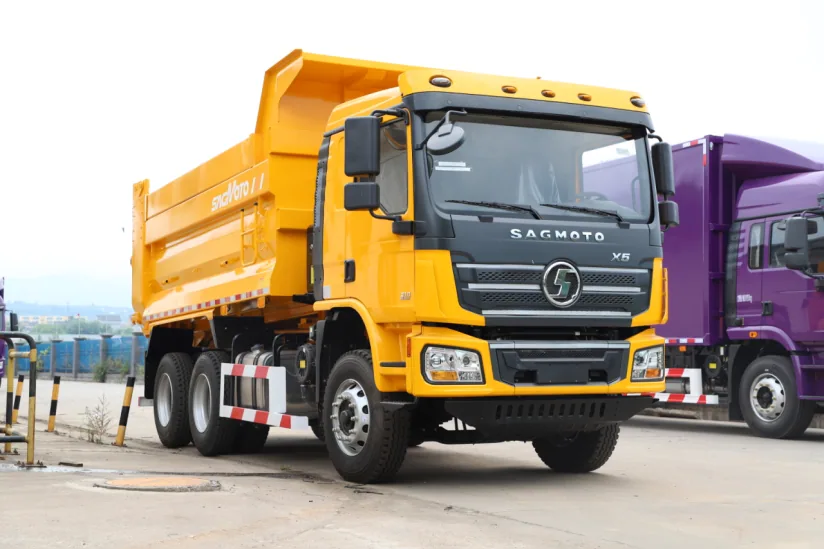
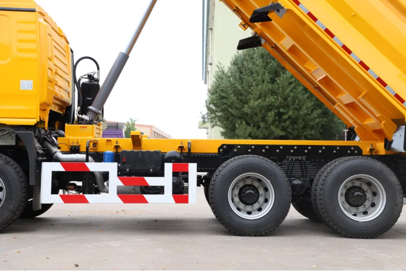

A dump-truck enquiry should start with the material and work cycle, not with a body-volume number. The SAGMOTO X5 platform includes a 6x4 dump-truck application, but the appropriate body, chassis and powertrain depend on the job. This guide focuses on the decisions a fleet buyer should settle before a final drawing and specification are approved.
Start with what the truck will carry
Sand, aggregate, excavated soil and rock do not load or discharge in the same way. Their density, moisture, particle size and tendency to stick affect the useful body volume and the effort needed to unload. Buyers should describe the normal material and any occasional heavier material instead of asking for the largest possible body.
Also identify the loading equipment. A wheel loader, excavator or conveyor can impose different loading patterns and impact points. That information helps the body builder discuss floor and side construction, tailgate arrangement and body height. These are configuration questions, not fixed X5 specifications.
Match the hoist and tipping area to the site
Confirm whether unloading occurs on a level hardstand, a sloped work area or a confined site. Overhead clearance, ground firmness, turning room and proximity to people or structures affect where and how a body can be raised. The project should define its operating procedure and safety controls; an image of a raised body alone does not establish a rated payload or a safe working limit.
Discuss hoist arrangement, hydraulic power take-off requirements, control layout and maintenance access with the body supplier. Their compatibility with the selected transmission and chassis must be confirmed in the final build specification.

Specify route and weight limits before body dimensions
Provide route gradients, surface condition, turning points, distance per cycle and the proportion of public-road travel. Then confirm the destination's applicable gross-vehicle and axle limits with the responsible local party. Body volume is not the same as legal payload: the tare mass of the chassis and body, the material density and axle distribution all matter.
The X5 platform material lists 4x2, 4x4 and 6x4 dump applications and planned Cummins or Yuchai power choices. It also describes a reinforced frame, multi-leaf suspension and HANDE tandem rear axles for certain 6x4 configurations. These are platform-planning details; exact availability and specifications must be verified for the order.
A useful RFQ checklist
- Material type, density range and moisture condition
- Loader type, loading height and expected cycle
- Body inside dimensions or volume target, with the reason for that target
- Floor and side construction requirements and tailgate preference
- Road gradients, surface, haul distance and unloading clearance
- Destination, steering side, required emissions and known weight limits
- Inspection scope and the interfaces expected from the body supplier
Questions buyers often ask
Can I choose a body by cubic capacity alone?
No. Density, tare mass, axle loads, loading impact and legal weight limits must be considered together.
Does the pictured truck prove a specific body thickness or payload?
No. The photo shows a vehicle configuration but does not verify hidden material thickness, rated payload or every technical value. Request the approved drawing and specification for the offered unit.
What should be frozen before production?
Confirm the chassis, engine and transmission, body dimensions and construction, hydraulic interfaces, vehicle weights, destination requirements and inspection record in writing.
Discuss an X5 dump-truck configuration
Send the material, route, loading method and destination so the body and chassis can be reviewed together.
Submit requirements · WhatsApp +86 185 9197 6330 · Read the X5 platform overview